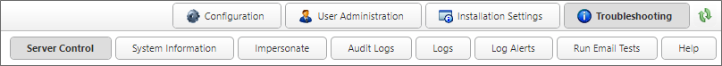

The Troubleshooting section contains the various pages needed for troubleshooting issues with Process Director. This section provides you with an easier way to troubleshoot issues with the server and processes. The logs can be read here without going to the logs folder, and can be submitted to technical support with a single button click.

The section also provides basic information about your Process Director installation, including its name, Interface URL, Server Version, Install Path, License Description, Server IP Address, and Logging Level.
The Troubleshooting section's pages can be accessed via Table of Contents displayed on the upper right section of this page, or by using one of the links below:
Server Control: A list of links that invoke various server actions.
System Information: Provides a display of relevant server statistics.
Live Stats: Displays current performance statics on a continuing basis.
Impersonate: Enables you to impersonate other users.
Audit Logs: Enables access to the Audit logs saved in the Process Director Database, when this feature is configured for appropriately licensed installations.
Logs: Enables access to the system logs.
Log Alerts: Enables you to set alerts for specific events that might occur in the log files.
Run Email Tests: Enables sending test emails from the system.
Help: From the Troubleshooting section, clicking the Help button will open a new browser tab that displays the documentation web site for Process Director at https://doc.bplogix.com. There is no need for further documentation about this link.